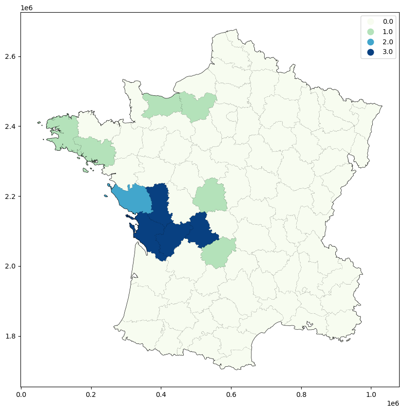
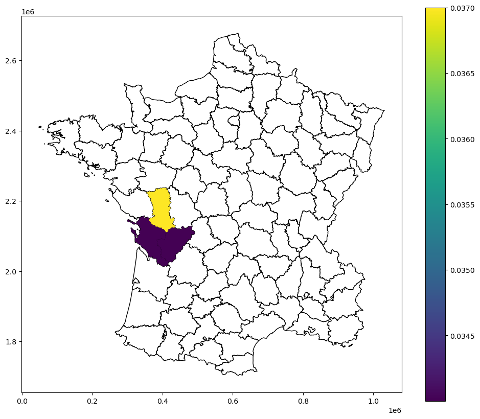
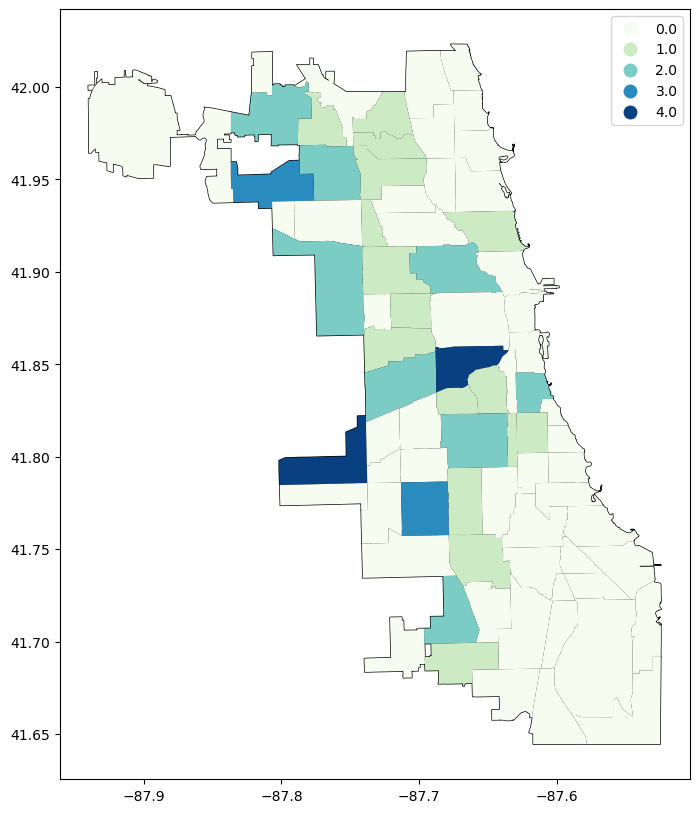
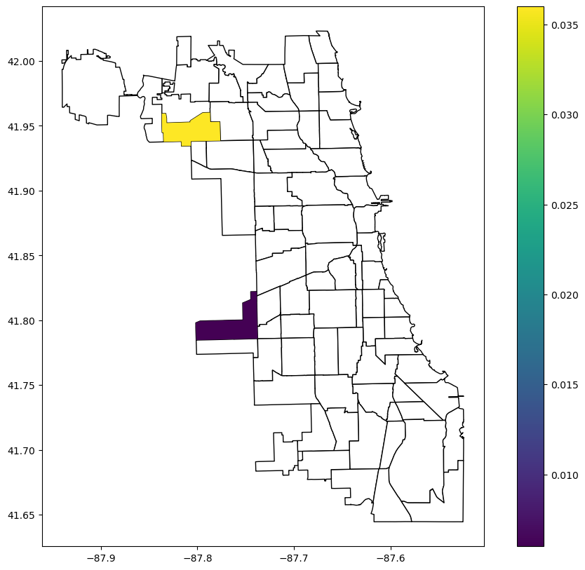
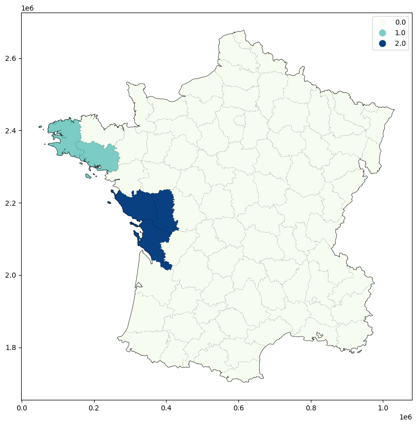
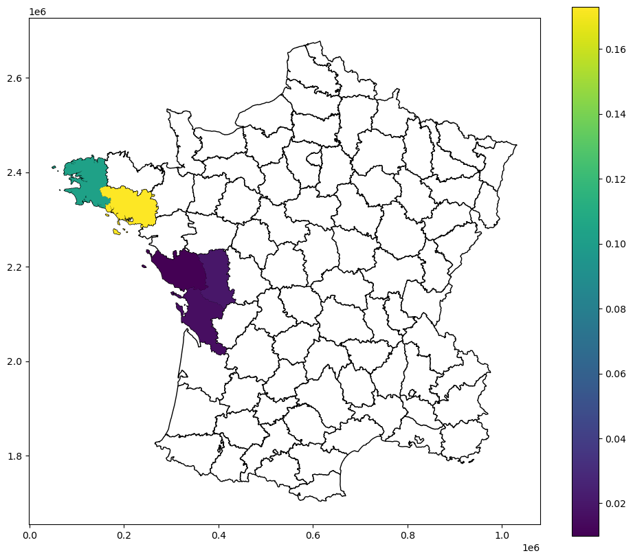

Local join counts¶
In the following notebook we review the different type of local join counts (LJC) put forward by Anselin and Li (2019). LJC focus on spatial phenomenon that take on binary values (e.g. 0 or 1). This suite of exploratory statistics is especially useful to analysts who want to focus on different types of what Anselin and Li call ‘co-location’; that is, the presence or absence of specific 0 or 1 values.
Note that there are several versions of the LJC:
univariate LJC
bivariate LJC (case 1)
bivariate LJC (case 2)
multivariate LJC
The use case of each of these statistics, as well as their implementation in PySAL, is provided below.
Univariate LJC¶
The univariate LJC is a the local version of the ‘black-black’ (aka ‘BB’) statistic. This statistic describes the count of the neighbors, \(x_j\), of a given unit, \(x_i\), that are equal to 1 when the unit is also equal to 1. Formally:
Eq 1. $\(BB_i = x_i \sum_{j} w_{ij} x_j\)$
It is important to note that when a given unit \(x_i\) is equal to 0, the statistic also becomes 0. Anselin and Li describe the application of this statisttic as:
Hence, the local join count statistic is only meaningful to assess whether locations with an “event” (i.e., \(x_i = 1\) ) are surrounded by more locations with events than would be the case under spatial randomness. Anselin and Li, 2019, Section 2.2 Page 192
We can apply the PySAL implementation of the univariate LJC statistic to its original implementation in GeoDa. We first load in the Guerry dataset and convert the column Donats to binary column. This new binary column has a value of 1 for the top three groupings of Donats based on a Natural Breaks classification method (and 0 for otherwise).
import geopandas as gpd
import libpysal
guerry = libpysal.examples.load_example("Guerry")
guerry_ds = gpd.read_file(guerry.get_path("guerry.shp"))
guerry_ds["SELECTED"] = 0
guerry_ds.loc[(guerry_ds["Donatns"] > 10997), "SELECTED"] = 1
Downloading Guerry to /home/runner/.local/share/pysal/Guerry
We now make a Queen-contiguity weights object to describe the relationship between the units.
w = libpysal.weights.Queen.from_dataframe(guerry_ds, use_index=False)
We can now apply the univariate LJC function on the dataset.
from esda.join_counts_local import Join_Counts_Local
LJC_uni = Join_Counts_Local(connectivity=w).fit(guerry_ds["SELECTED"])
The LJC attribute returned from the function counts the total number of local join counts.
LJC_uni.LJC
array([0., 0., 0., 0., 0., 0., 0., 0., 0., 0., 0., 0., 1., 0., 3., 3., 0.,
1., 0., 0., 0., 0., 0., 0., 1., 0., 1., 0., 0., 0., 0., 0., 0., 1.,
0., 0., 0., 0., 0., 0., 0., 0., 0., 0., 0., 0., 0., 0., 0., 0., 0.,
0., 0., 1., 0., 0., 0., 0., 0., 0., 0., 0., 0., 0., 0., 0., 0., 0.,
0., 0., 0., 0., 0., 0., 3., 0., 0., 0., 0., 0., 2., 0., 3., 0., 0.])
And the p_sim attribute contains the p-values obtained from a conditional randomization procedure.
LJC_uni.p_sim
array([ nan, nan, nan, nan, nan, nan, nan, nan, nan,
nan, nan, nan, 0.436, nan, 0.034, 0.034, nan, 0.309,
nan, nan, nan, nan, nan, nan, 0.305, nan, 0.332,
nan, nan, nan, nan, nan, nan, 0.302, nan, nan,
nan, nan, nan, nan, nan, nan, nan, nan, nan,
nan, nan, nan, nan, nan, nan, nan, nan, 0.466,
nan, nan, nan, nan, nan, nan, nan, nan, nan,
nan, nan, nan, nan, nan, nan, nan, nan, nan,
nan, nan, 0.037, nan, nan, nan, nan, nan, 0.147,
nan, 0.061, nan, nan], dtype=float32)
We can map these values after placing them back into the dataset.
guerry_ds["LJC_UNI"] = LJC_uni.LJC
guerry_ds["LJC_UNI_p_sim"] = LJC_uni.p_sim
From here you may be interested in mapping the LJC…
import matplotlib.pyplot as plt
fig, ax = plt.subplots(figsize=(12, 10), subplot_kw={"aspect": "equal"})
guerry_ds.plot(color="white", edgecolor="black", ax=ax)
guerry_ds.plot(column="LJC_UNI", categorical=True, cmap="GnBu", legend=True, ax=ax)
<Axes: >

Or mapping the accompanying significance values below a certain threshold…
import numpy
guerry_ds["LJC_UNI_p_sim_sig"] = numpy.nan
guerry_ds.loc[(guerry_ds["LJC_UNI_p_sim"] <= 0.05), "LJC_UNI_p_sim_sig"] = guerry_ds[
"LJC_UNI_p_sim"
]
import matplotlib.pyplot as plt
fig, ax = plt.subplots(figsize=(12, 10), subplot_kw={"aspect": "equal"})
guerry_ds.plot(color="white", edgecolor="black", ax=ax)
guerry_ds.plot(column="LJC_UNI_p_sim_sig", legend=True, ax=ax)
<Axes: >

Bivariate LJC (case 1)¶
When considering two variables, say \(x\) and \(z\), in the bivariate LJC, distinctions need to be made about what spatial pattern is of interest. Anselin and Li define two use cases of the statistic. The first use case is when there is no in-situ co-location, or where \(x_i\) and \(z_i\) no not take the same value at \(i\) or \(j\). More specifically, the bivariate LJC case 1 is interested in when both \(x_i\) and \(x_j\) equal 1 (i.e. \(x_i=x_j=1\)) as well as \(x_j=0\). Substantively, Anselin and Li explain that case is useful when the phenomenon represented by \(x\) and \(z\) “cannot occur in the same location”.
Formally, this case is represented as:
Eq 2. $\( BJC_i = x_i (1 - z_i) \sum_{j} w_{ij} z_j (1-x_j)\)$
As above, we apply the PySAL implementation of the bivariate LJC case 1 statistic to its original implementation in GeoDa. Unlike above, we now move to the Community areas in Chicago dataset (commpop). We are going to examine instances of negative spatial autocorrelation, identified by locations where negative population changes (popneg=1) surrounded by more locations with positive popuation changes (popplus=1).
import geopandas as gpd
import libpysal
commpop = gpd.read_file(
"https://github.com/jeffcsauer/GSOC2020/raw/master/validation/data/commpop.gpkg"
)
We again make a Queen-contiguity weights object to describe the relationship between the units.
w = libpysal.weights.Queen.from_dataframe(commpop, use_index=False)
Now we run the Local_Join_Count_BV function. Note that the order of the variables is meaningful! Changing the order of the variables will change the implied research question.
from esda.join_counts_local_bv import Join_Counts_Local_BV
LJC_BV_Case1 = Join_Counts_Local_BV(connectivity=w).fit(
commpop["popneg"], commpop["popplus"], case="BJC"
)
As before, we can map both the LJC and p_sim values after placing the results back into the commpop dataset.
commpop["LJC_BV_Case1"] = LJC_BV_Case1.LJC
commpop["LJC_BV_Case1_p_sim"] = LJC_BV_Case1.p_sim
fig, ax = plt.subplots(figsize=(12, 10), subplot_kw={"aspect": "equal"})
commpop.plot(color="white", edgecolor="black", ax=ax)
commpop.plot(column="LJC_BV_Case1", cmap="GnBu", categorical=True, legend=True, ax=ax)
<Axes: >

commpop["LJC_BV_Case1_p_sim_sig"] = numpy.nan
commpop.loc[(commpop["LJC_BV_Case1_p_sim"] <= 0.05), "LJC_BV_Case1_p_sim_sig"] = (
commpop["LJC_BV_Case1_p_sim"]
)
fig, ax = plt.subplots(figsize=(12, 10), subplot_kw={"aspect": "equal"})
commpop.plot(color="white", edgecolor="black", ax=ax)
commpop.plot(column="LJC_BV_Case1_p_sim_sig", legend=True, ax=ax)
<Axes: >

Bivariate LJC (case 2)¶
We now move on to case 2 of the bivariate LJC. Unlike case 1, case 2 identifies areas with co-location. Case 2 is explicitly concerned with instances where \(x_i=z_i=1\) as well as \(x_j=z_j=1\). Anselin and Li refer to this situation as a co-location cluster (CLC). We formally write this as:
We return to the Guerry dataset to demonstrate its implementation in PySAL. We are interested in identifying areas that are in the top Quantile for the variables Infants (children born out of wedlock) and Donatns (donations). We reload the dataset and create the variables below:
guerry = libpysal.examples.load_example("Guerry")
guerry_ds = gpd.read_file(guerry.get_path("guerry.shp"))
guerry_ds["infq5"] = 0
guerry_ds["donq5"] = 0
guerry_ds.loc[(guerry_ds["Infants"] > 23574), "infq5"] = 1
guerry_ds.loc[(guerry_ds["Donatns"] > 10973), "donq5"] = 1
We again make a Queen-contiguity weights object to describe the relationship between the units.
w = libpysal.weights.Queen.from_dataframe(guerry_ds, use_index=False)
We now run the Local_Join_Count_BV command, this time changing the case argument to CLC.
LJC_BV_Case2 = Join_Counts_Local_BV(connectivity=w).fit(
guerry_ds["infq5"], guerry_ds["donq5"], case="CLC"
)
As before, we can map the LJC and accompanying p_sim values.
guerry_ds["LJC_BV_Case2"] = LJC_BV_Case2.LJC
guerry_ds["LJC_BV_Case2_p_sim"] = LJC_BV_Case2.p_sim
fig, ax = plt.subplots(figsize=(12, 10), subplot_kw={"aspect": "equal"})
guerry_ds.plot(color="white", edgecolor="black", ax=ax)
guerry_ds.plot(column="LJC_BV_Case2", cmap="GnBu", categorical=True, legend=True, ax=ax)
<Axes: >

fig, ax = plt.subplots(figsize=(12, 10), subplot_kw={"aspect": "equal"})
guerry_ds.plot(color="white", edgecolor="black", ax=ax)
guerry_ds.plot(column="LJC_BV_Case2_p_sim", legend=True, ax=ax)
<Axes: >

Multivariate LJC¶
The last LJC to review is the multivariate LJC statistic. This is actually an extension of the bivariate LJC case 2. Rather than considering two variables \(x\) and \(z\), the multivariate statistic consdiers \(m\) variables at each location \(i\). All \(m\) variables must then meet the co-location criterion of equalling 1. Formally:
Anselin and Li state clearly in multiple sources that although the multivariate LJC statistic is a straightforward extension of the bivariate LJC case 2, its substantive meaning is less straightforward. In their own words:
The extension to multiple binary variables is mathematically straightforward, although maybe conceptually less so. While different combinations are possible, the most practical use case would be one where the interest focuses on the co-location of multiple variables coinciding with co-location for the neighbors. Again, we can refer to this as a co-location cluster. An example would be where binary variables were constructed from continuous-valued measures for those locations where the observations fall in a pre-specified range, such as the upper decile. The co-location cluster would indicate where such coincidences occur with neighbors that have similar coincidences. However, as the number of variables considered increases, we run into the “curse of dimensionality,” and results would be less meaningful, in the sense that such coincidences would likely be increasingly rare and thus always be indicated as “significant.” Anselin and Li, 2019, Section 3.3, Page 198
We demonstrate this problem by extending the example from the bivariate LJC case 2. We add a third variable that counts the number of suicides in an area (Suicids). The substnative quesiton of interest is now seeking areas that are in the highest Quantile for the number of births out of wedlock, the number of donations to the poor, and the number of suicides. We reload the Guerry dataset and create the variables:
guerry = libpysal.examples.load_example("Guerry")
guerry_ds = gpd.read_file(guerry.get_path("guerry.shp"))
guerry_ds["infq5"] = 0
guerry_ds["donq5"] = 0
guerry_ds["suic5"] = 0
guerry_ds.loc[(guerry_ds["Infants"] > 23574), "infq5"] = 1
guerry_ds.loc[(guerry_ds["Donatns"] > 10973), "donq5"] = 1
guerry_ds.loc[(guerry_ds["Suicids"] > 55564), "suic5"] = 1
And agian create the Queen contiguity spatial weights object.
w = libpysal.weights.Queen.from_dataframe(guerry_ds, use_index=False)
We now load in the Local_Join_Count_MV function and apply it to all three variables:
from esda.join_counts_local_mv import Join_Counts_Local_MV
LJC_MV = Join_Counts_Local_MV(connectivity=w).fit(
[guerry_ds["infq5"], guerry_ds["donq5"], guerry_ds["suic5"]]
)
Before proceeding to mapping, it is worthwhile to check if there are any areas that meet the criterion described above.
LJC_MV.LJC
array([0., 0., 0., 0., 0., 0., 0., 0., 0., 0., 0., 0., 0., 0., 0., 0., 0.,
0., 0., 0., 0., 0., 0., 0., 0., 0., 0., 0., 0., 0., 0., 0., 0., 0.,
0., 0., 0., 0., 0., 0., 0., 0., 0., 0., 0., 0., 0., 0., 0., 0., 0.,
0., 0., 0., 0., 0., 0., 0., 0., 0., 0., 0., 0., 0., 0., 0., 0., 0.,
0., 0., 0., 0., 0., 0., 0., 0., 0., 0., 0., 0., 0., 0., 0., 0., 0.])
Because there are no areas that meet the criteria, no areas will have a significance value.
LJC_MV.p_sim
array([nan, nan, nan, nan, nan, nan, nan, nan, nan, nan, nan, nan, nan,
nan, nan, nan, nan, nan, nan, nan, nan, nan, nan, nan, nan, nan,
nan, nan, nan, nan, nan, nan, nan, nan, nan, nan, nan, nan, nan,
nan, nan, nan, nan, nan, nan, nan, nan, nan, nan, nan, nan, nan,
nan, nan, nan, nan, nan, nan, nan, nan, nan, nan, nan, nan, nan,
nan, nan, nan, nan, nan, nan, nan, nan, nan, nan, nan, nan, nan,
nan, nan, nan, nan, nan, nan, nan], dtype=float32)
Nevertheless, it is important to recognize tht such a finding may still be important as a ‘null’ result!